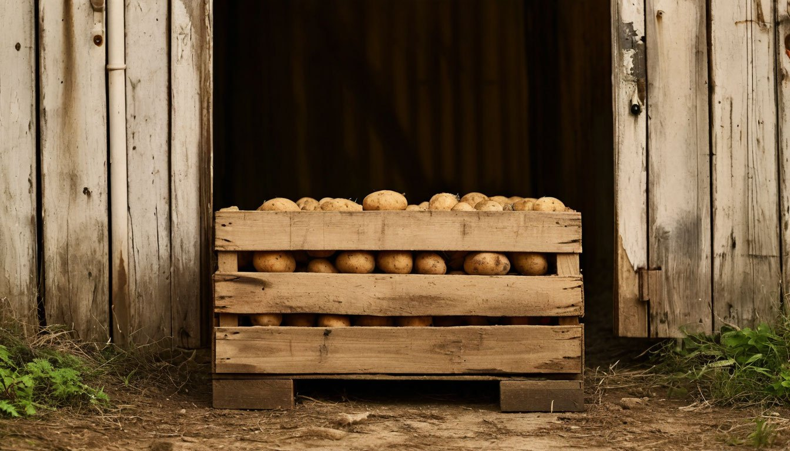
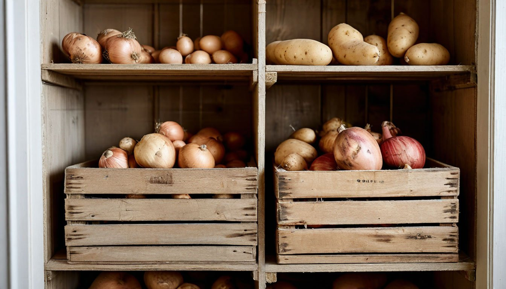

Как хранить картошку в квартире, чтобы не прорастала и не портилась до весны
Осенью кажется, что мешка картошки хватит надолго. А в декабре открываешь его, и половина клубней уже пустила длинные белые ростки, а несколько штук стали мягкими.
Картошка в квартире портится не потому, что «такой сорт попался». Ей просто слишком тепло, светло или сыро. В погребе на даче всё это решается само собой, а в городской квартире приходится подстраиваться.
У нас есть дача, и осенние запасы для меня тема знакомая. Только погреба в обычной московской квартире нет, поэтому приходится искать, где держать овощи до весны. Вот что важно знать.
Ошибка №1: хранить картошку в тепле
На кухне или в прихожей у батареи картошка решает, что пришла весна, и начинает прорастать. Уже при комнатной температуре ростки появляются за пару недель.
Что делать: искать самое прохладное место в доме. Идеально от 2 до 6 градусов: застеклённый балкон, кладовка у наружной стены, ящик у входной двери. В холодильнике картошку держать не стоит: при слишком низкой температуре крахмал превращается в сахар, и она становится сладковатой.

Ошибка №2: оставлять на свету
От света картошка зеленеет. Это не только некрасиво: в зелёных местах накапливается соланин, и такие клубни лучше не есть или срезать зелень с запасом.
Что делать: держать картошку в полной темноте. Деревянный ящик с крышкой, плотный тканевый мешок или картонная коробка подойдут лучше прозрачного пакета. В полиэтилене картошка ещё и задыхается: внутри собирается конденсат.
Ошибка №3: убирать картошку мытой
Хочется сразу отмыть клубни от земли, чтобы потом не возиться. Но влага остаётся на кожуре, и картошка начинает гнить быстрее.
Что делать: перед хранением картошку не мыть, а только просушить пару дней в тёмном месте и аккуратно стряхнуть землю. Мыть уже перед готовкой. Повреждённые и порезанные при копке клубни лучше отложить и съесть первыми.

Ошибка №4: хранить рядом с луком
Самый неочевидный пункт. Лук и картошка, лежащие рядом, ускоряют порчу друг друга: лук берёт влагу от картошки и начинает гнить, а картошка быстрее прорастает.
Что делать: хранить их в разных ящиках или хотя бы на расстоянии. Луку нужен сухой воздух, картошке чуть более влажный, так что раздельное хранение удобно обоим.
Ошибка №5: не перебирать запас
Одна подгнившая картофелина за пару недель испортит соседние. В закрытом мешке этого не видно до последнего.
Что делать: раз в две-три недели перебирать картошку, убирая мягкие и проросшие клубни. Ростки лучше обламывать сразу, пока они маленькие. Небольшие клубни с ростками можно смело пустить на пюре в ближайшие дни.
Если картошку хранят на балконе
Застеклённый балкон зимой бывает холоднее нуля, а подмёрзшая картошка становится сладковатой и водянистой.
Ящик стоит утеплить: поставить его на деревянные бруски, а не на холодный пол, и укрыть старым одеялом или пенопластом. В сильные морозы его можно ненадолго занести в квартиру.
От автора
Мне нравится, когда осенние запасы доживают до зимы: в сырой ноябрьский вечер варёная картошка с укропом кажется самым уютным ужином. Но чтобы до него дожить, нужно немного заботы в первые недели.
Проросшие клубни бывают у всех, идеального хранения в квартире не добиться. Но когда картошка стоит в тёмном прохладном углу, а не в пакете на кухне, её действительно хватает гораздо дольше.
Подписывайтесь: сегодня вечером продолжу серию «Медленный быт» и расскажу, как один спокойный час в воскресенье готовит дом ко всей неделе.
А где вы храните картошку зимой, если нет погреба?